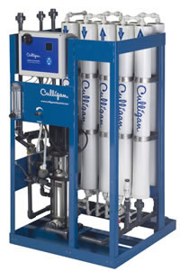

Models Available |
||
Series |
Capacity (gallons/day) |
Capacity (gallons/minute) |
LCRO |
100-200 |
0.07-0.14 |
G1 |
500-4000 |
0.35-2.8 |
M1 |
250-4000 |
0.17-2.8 |
E1 |
250-4000 |
0.17-2.8 |
G2 |
4000-19,000 |
2.80-13.2 |
M2 |
4000-10,000 |
2.80-7.0 |
E2 |
4000-10,000 |
2.80-7.0 |
G3 |
24,000-288,000 |
16.70-200 |
Culligan Water Conditioning of Danville |
|
| 100 Stewarts Lane N. | |
| PO Box 244 | |
| Danville, KY 40423-0244 |
QUOTATIONfor |
| Wilderness Trace Manufacturing |
| 500 Stewarts Lane |
| Danville, KY 40422 |
We hereby submit specifications and estimates for:
|
| Culligan G2-3HE Plus Reverse Osmosis System |
|
Equipment Cost $10,826(FOB Zip 60048) (Price Good until 5/31/13) |
QUOTATIONfor |
| Wilderness Trace Manufacturing |
| 500 Stewarts Lane |
| Danville, KY 40422 |
We hereby submit specifications and estimates for:
|
| Culligan G3-533 Reverse Osmosis System |
|
Equipment Cost $71,496(FOB Zip 60048) (Price Good until 5/13/13) |
For Custom Quotation |
email: culliganky@qx.net |
| phone: 800-892-6414 |
Copyright 2013, Culligan Water Conditioning of Danville. | PO Box 244, Danville, Kentucky 40423-0244
859-236-4965 | 800-892-6414 (within Kentucky) | Fax 859-236-4965
Site Updated November 10, 2013 | Page last updated December 2, 2104
Dogwood in Danville, Kentucky10239 |
Horse Grazing in Boyle County, Kentucky10238 |
For Price Quotation and Preliminary Design:Contact Culligan of Danville Kentuckyphone: 800-892-6414 or 859-236-4965email: culliganky@qx.net |
 Scenic Photos of Central Kentucky 10165
Scenic Photos of Central Kentucky 10165
|
|


Culligan Series G-2 Reverse Osmosis System10085 |
Culligan G-3 Series Commercial Reverse Osmosis System10084 |
Culligan of Danville Kentucky furnishes reverse osmosis equipment, along with spare parts such as membranes, end Caps, membrane housings, pump/motor assemblies and solenoid valves. The RO units include the following models: Culligan LC RO, Culligan G1 RO, Culligan M1 RO, Culligan E1 RO, Culligan G2 Reverse Osmosis Systems, Culligan M2 RO, Culligan E2 RO and Culligan G3 Reverse Osmosis System. These units can be purchased on an installed basis in Central Kentucky or can be purchased on an equipment only basis in Continental USA for capital projects. Quotations are available upon request.